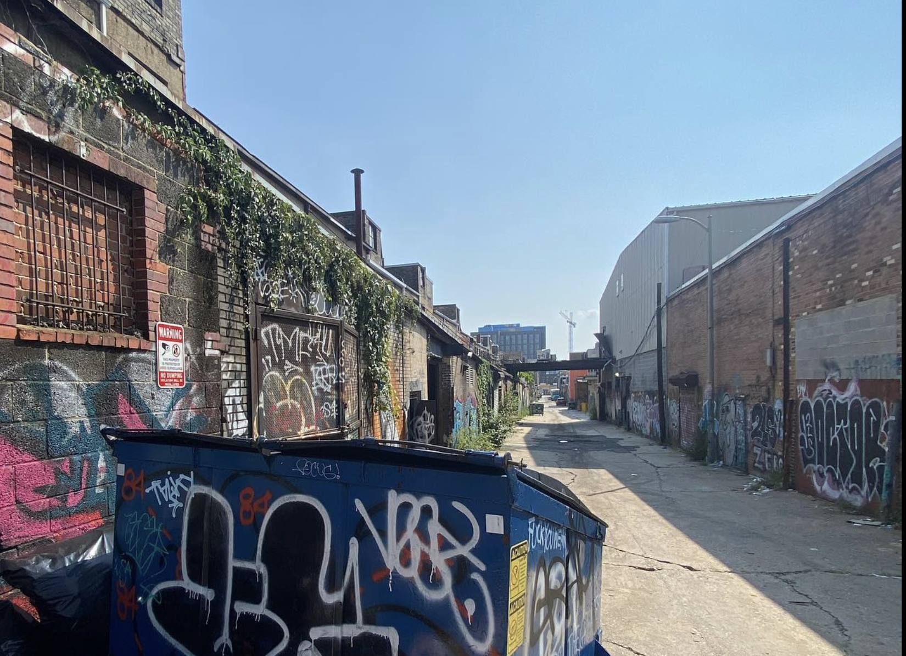
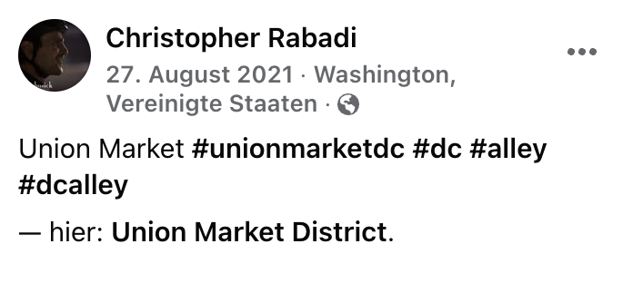
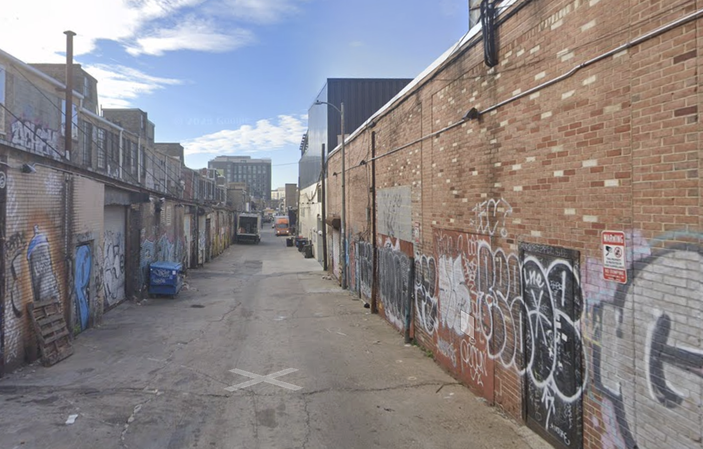

Challenge 1: What a Dump!
Sometimes the most interesting things are found in the most unexpected places...
... but sometimes those places are full of trash.
This dumpster is in an alley somewhere, but where?
Where was the photographer standing when they took this photo?
Use latitude and longitude in decimal format with three decimals (12.345, -67.890).
Looking for language information
In this image I can see a label on the dumpster in English saying "Do Not Park".
I can also see a label saying 8yd, meaning 8yd. Yards are a common measurement in the US, but not anywhere else.
I think this dumpster must be in the United States.
Companies
On the dumpster there is a sign from what appears to be a waste management company.
The phone number starts with 800.
Graffiti
The dumpster has written on it "Howard U" in faint text.
Howard University is in Washington D.C.
When I search for "waste management 800 Washington DC", the waste management company's logo comes up.
The dumpster is probably in Washington D.C. near Howard University.
Image Search
When I searched for the image on Google Image Search, a lot of similar images come up but most don't match.
One unique feature of the image is that it has this weird bridge over the alleway.
It also has an unusual red brick and white brick pattern on the left side.
One of the images that came up was this picture from Christopher Rabadi on Facebook.
It has the same bridge in it, as well as the same red and white brick pattern on the left side.
He lists this alleyway as being at Union Market.
When I search for Union Market in Washington D.C., I find an area near Howard University.
This area has a small alleyway called Morse Street Alley.
I used Google Street View to go down the alleyway on the map, it looks similar but the bridge is missing.
I found the red and white brick pattern on one of the buildings, and aligned the image so that the metal garage door is on the right.
I used the Google Maps url in Chrome to look at the coordinates.